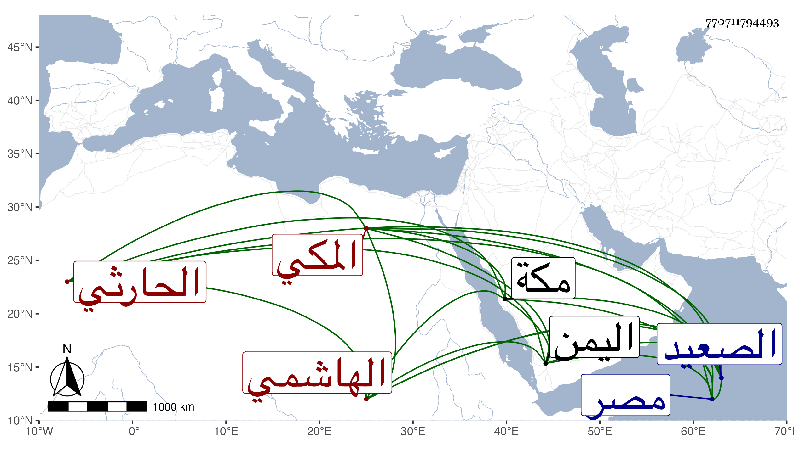

0902Sakhawi.DawLamic.ITO20230111-ara1.EIS1600.770711794493
Biography ID: 770711794493
121
علي بن موسى بن علي بن قريش بن داود الهاشمي الحارثي المكي . ولد بها ونشأ فسمع من أبي اليمن الطبري وأجاز له في سنة خمس فما بعدها ابن صديق والعراقي والهيثمي وعيرهم ، ودخل مصر والصعيد ثم اليمن وأقام بها دهرا عند الرضى أبي بكر بن محمد بن عبد اللطيف بن سالم والد الشجاع عمر ، وحصل في أيامه أموالا وذهبت منه لما غضب عليه ورجع إلى مكة بعيال الرضى وأولاده في سنة خمس وأربعين فلم يلبث أن مات في المحرم من التي بعدها عن خمس وسبعين ظنا . ذكره ابن فهد وأسقط عليا من نسبه في موضع آخر .
